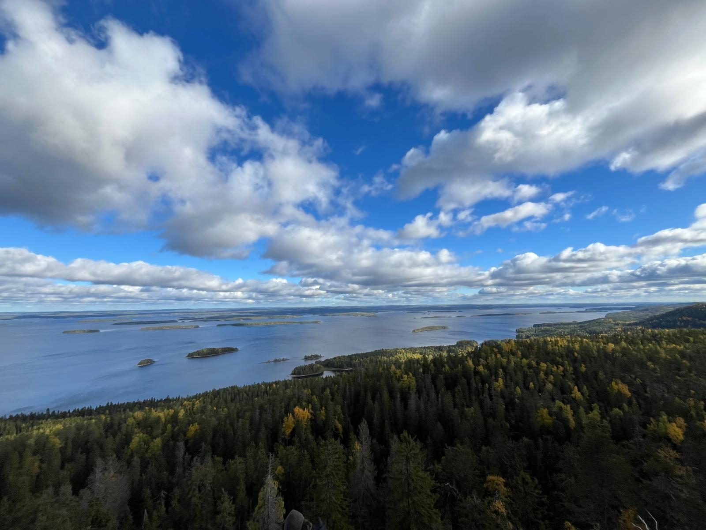

Aventure scandinave d'Elisa et Paola
Elisa
Avant de venir en Suède, tout le monde m’avait dit que les Suédois étaient froids et peu agréables. Quand je suis arrivée, et pendant le premier mois, j’ai pensé totalement l’inverse. Les suédois parlent parfaitement l’anglais, ils répondent aimablement quand on leur pose une question et ils ne parlent jamais trop fort dans les espaces publics. Cependant, au fur et à mesure, je me suis rendue compte que ce dont on m’avait parlé n’avait rien à voir avec le fait d’être aimable ou souriant. En Suède, les habitants ont cette idée qu’il ne faut pas envahir l’espace personnel des autres et qu’il faut toujours veiller à ne pas déranger son prochain. Un exemple frappant est celui de la cigarette: en Suède, il est interdit de fumer à moins de cinq mètres des bâtiments et la plupart des suédois consomment de la nicotine en sachet pour ne pas déranger les autres avec la fumée. Cette volonté, inhérente à chaque suédois, les rend distants et donne cette impression de froid que l’on m’avait évoquée.
Un autre aspect sur lequel j’avais des à priori et qui était d’ailleurs moteur de ma décision de partir dans ce pays est le système éducatif suédois. Partout on entend, que les pays nordiques ont les meilleurs systèmes au monde et que ce sont les pays où l’on est le plus heureux. Après avoir passé plusieurs mois là-bas, je pense que leur système éducatif est particulièrement responsabilisant et qu’il permet de former des personnes autonomes et motrices de leur éducation. Cependant, je pense que, comme tout système, il ne convient pas à tout le monde et qu’il peut parfois avoir des conséquences négatives sur certaines personnes qui seraient moins à même de se motiver toute seule. Finalement, je retiens de cette expérience que tout pays a ses points positifs et négatifs. J’avais tendance à idéaliser les pays nordiques et à les concevoir comme ces pays qui auraient trouvé des solutions à tout. Loin d’être déçue, je ressors grandie de cette expérience.

Une expérience particulière qui rythme la vie des Suédois et qu’il m’a été donné de vivre est le raccourcissement des journées. En effet, en hiver le soleil se lève vers 9h et se couche vers 14h30. On vit donc principalement la nuit, ce qui est particulièrement perturbant. Pour les étudiants étrangers, qui ne passent que quelques mois dans ces conditions, c’est une expérience insolite mais temporaire qui n’a donc pas beaucoup d’impact. Cependant, pour avoir discuté avec des suédois, certains m’ont affirmé que passer tout l’hiver en Suède pouvait être particulièrement déprimant du fait du manque de soleil et de vitamines.
Finalement, s’il est une chose dont je me souviendrai, qui fait partie du quotidien des suédois, c’est ce qu’ils appellent le Fika. Cette tradition, dont tout le monde vous parlera si vous y allez, consiste en une pause à 10h ou à 15h, lors de laquelle les suédois se retrouvent pour parler autour d’une tasse de café bien chaude et d’un roulé à la cannelle. Cette tradition chaleureuse, est un moment de convivialité qui rythme la vie des suédois et qui a rythmé mon semestre.
figure 2 : photo de sapin en Laponie
figure 3 : photo de cinnamon rolls, spécialité suédoise
Paola
Avant de partir, j'avais plusieurs a priori sur la vie en Finlande : je m'attendais à un froid intense, peu de soleil, et des gens distants, parfois perçus comme froids. En même temps, je savais que le pays était réputé pour sa nature magnifique, et j'avais entendu dire que les Finlandais avaient un lien particulier avec leur environnement. Ces idées se sont révélées en grande partie vraies. Par exemple, la faible durée d'ensoleillement – de 9 h à 14 h seulement – a été particulièrement déstabilisante. Cela a eu un impact sur mon moral, et l'école recommandait même de prendre des compléments de vitamine D pour compenser le manque de lumière. Ce conseil m’a bien aidée. Par ailleurs, j'ai vraiment expérimenté la timidité des Finlandais. Ils sont très réservés, et malgré quelques échanges sympathiques, je ne me suis liée d'amitié avec aucun local. En revanche, j'ai noué des liens très forts avec d'autres étudiants Erasmus venus des quatre coins de l'Europe, ce qui a rendu l'expérience incroyablement enrichissante et multiculturelle.
Les Finlandais, bien qu’un peu distants au départ, montrent leur chaleur à travers leur passion pour la nature, que j’ai beaucoup appréciée. Cependant, j'ai aussi découvert un aspect financier que je n'imaginais pas : la sylviculture. Couper des forêts pour en faire du bois est un véritable business là-bas, parfois sans grande considération écologique, ce qui m’a un peu choquée.
J'ai également eu l'occasion de tenter des expériences totalement nouvelles, comme le sauna à la manière finlandaise. C'est une véritable institution et un moyen de se rapprocher des locaux. Dans les saunas publics, nous portions des maillots de bain, mais l'ambiance restait conviviale et authentique. Les Finlandais adorent rendre le sauna très chaud – parfois à un point où la chaleur brûle légèrement la peau. Après 10 minutes dans cette fournaise, le rituel consiste à plonger dans un lac gelé juste à côté. L'eau, à -2 °C, procure une sensation saisissante : elle semble brûler la peau à cause du contraste avec la chaleur du sauna. Enfin, s’allonger sur des bancs à l'extérieur, dans le froid, pour se détendre, était étonnamment agréable. On sent tous ses muscles se relâcher. Cette tradition m'a permis de mieux comprendre leur mode de vie et de me connecter à leur culture, même si mes véritables amitiés se sont surtout nouées avec mes camarades Erasmus.
figure 2 : photo de mes amis et moi se baignant dans l'océan artique
figure 3 : photo de sapin en Laponie Finlandaise